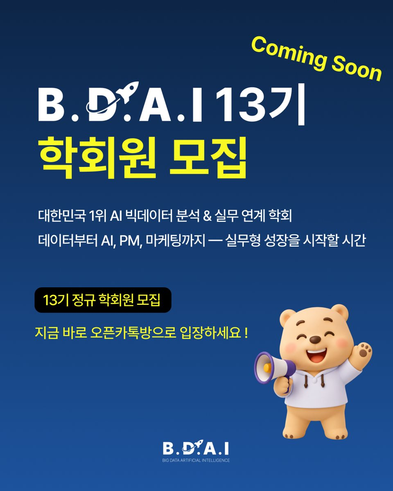

13기 정규 학회원 모집


- 15콘텐츠
- 9채널
- 45일

광고 집행 커트라인3일 · 98회업로드 후 3일 안에 프로필 방문이 98회(Q3)를 넘은 콘텐츠에만 집행
BDAI정규 학회원 모집 · 45일01
콘텐츠 반응을 기준으로 모집 광고 예산 배분하기
정규 교육 과정 학회원을 모집하는 45일 캠페인이었습니다. 9개 채널을 운영하며 집행 커트라인 하나로 광고 예산을 배분했습니다.
1,021명모집 인원
80만 원모집 광고 예산
직접 수행 · 콘텐츠 총괄, 광고 집행 판단
1,021명은 전체 채널 모집